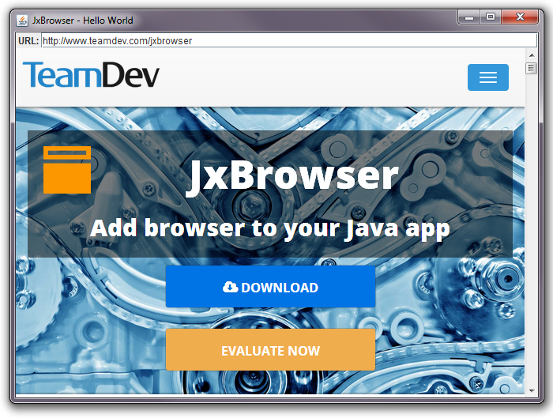

Quick Start Guide
Version: 5.4.2
In this Quick Start Guide you will learn how to download JxBrowser library, get evaluation license, create and run your first Java Swing application that loads and displays www.teamdev.com/jxbrowser web page.
Step 1: Download JxBrowser Library
To download JxBrowser library navigate to http://www.teamdev.com/jxbrowser
and click Download button or use
direct link. Unzip the the downloaded archive into some directory (e.g. D:\Projects\jxbrowser-5.4.2\). When you unzip the archive it will give you
directory structure inside D:\Projects\jxbrowser-5.4.2\ as follows:
lib\
jxbrowser-5.4.2.jar // JxBrowser library
jxbrowser-win-5.4.2.jar // Chromium binaries for Windows
jxbrowser-mac-5.4.2.jar // Chromium binaries for Mac OS X
jxbrowser-linux32-5.4.2.jar // Chromium binaries for Linux 32-bit
jxbrowser-linux64-5.4.2.jar // Chromium binaries for Linux 64-bit
samples\ // API samples
doc\javadoc\ // Public API JavaDocs
doc\guide\ // Programmer's and Quick Start Guide
demo\ // Demo application
Readme.txt // Readme file
License agreement.txt // License agreement
Step 2: Get JxBrowser License
To get free JxBrowser 30-days evaluation license please fill the web form
and click Send Me Evaluation Key button. You will receive an email with a link that you can
use to download
evaluation license — license.jar.
Download the license.jar file and
save it in the D:\Projects\jxbrowser-5.4.2\lib\ directory.
lib\
jxbrowser-5.4.2.jar // JxBrowser library
jxbrowser-win-5.4.2.jar // Chromium binaries for Windows
jxbrowser-mac-5.4.2.jar // Chromium binaries for Mac OS X
jxbrowser-linux32-5.4.2.jar // Chromium binaries for Linux 32-bit
jxbrowser-linux64-5.4.2.jar // Chromium binaries for Linux 64-bit
license.jar // Free 30-day evaluation license
Step 3: Create Java Project
Create a new Java Project using your favorite IDE.
How to create a new Java Project in IntelliJ IDEA Eclipse NetBeans
Step 4: Add Required Libraries
In your favorite IDE add JxBrowser libraries and evaluation license in the Project:
D:\Projects\jxbrowser-5.4.2\lib\jxbrowser-5.4.2.jarD:\Projects\jxbrowser-5.4.2\lib\jxbrowser-win-5.4.2.jarD:\Projects\jxbrowser-5.4.2\lib\jxbrowser-mac-5.4.2.jarD:\Projects\jxbrowser-5.4.2\lib\jxbrowser-linux32-5.4.2.jarD:\Projects\jxbrowser-5.4.2\lib\jxbrowser-linux64-5.4.2.jarD:\Projects\jxbrowser-5.4.2\lib\license.jar
How to add libraries in a Project in IntelliJ IDEA Eclipse NetBeans
Step 5: Create HelloWorld Example
In Java Project create a new HelloWorld java class with the following content.
import com.teamdev.jxbrowser.chromium.Browser;
import com.teamdev.jxbrowser.chromium.swing.BrowserView;
import javax.swing.*;
import java.awt.*;
import java.awt.event.ActionEvent;
import java.awt.event.ActionListener;
public class HelloWorld {
public static void main(String[] args) {
final Browser browser = new Browser();
BrowserView browserView = new BrowserView(browser);
final JTextField addressBar = new JTextField("http://www.teamdev.com/jxbrowser");
addressBar.addActionListener(new ActionListener() {
@Override
public void actionPerformed(ActionEvent e) {
browser.loadURL(addressBar.getText());
}
});
JPanel addressPane = new JPanel(new BorderLayout());
addressPane.add(new JLabel(" URL: "), BorderLayout.WEST);
addressPane.add(addressBar, BorderLayout.CENTER);
JFrame frame = new JFrame("JxBrowser - Hello World");
frame.setDefaultCloseOperation(WindowConstants.EXIT_ON_CLOSE);
frame.add(addressPane, BorderLayout.NORTH);
frame.add(browserView, BorderLayout.CENTER);
frame.setSize(800, 500);
frame.setLocationRelativeTo(null);
frame.setVisible(true);
browser.loadURL(addressBar.getText());
}
}
How to create Java class in IntelliJ IDEA Eclipse NetBeans
Step 6: Run the Program
Compile and run HelloWorld program. You will see the following window:

How to run Java program in IntelliJ IDEA Eclipse NetBeans